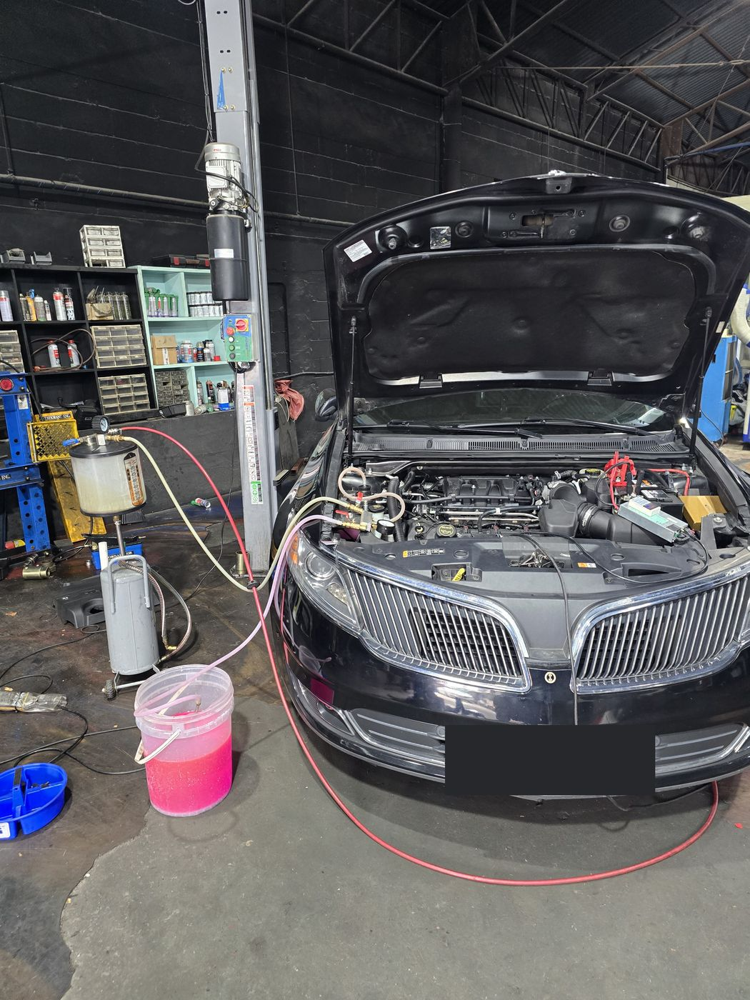
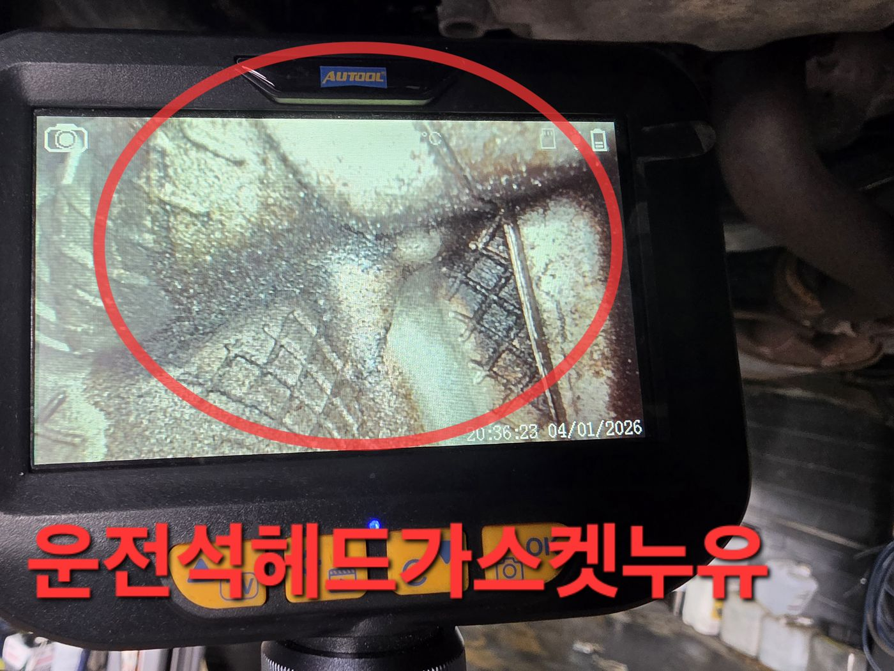
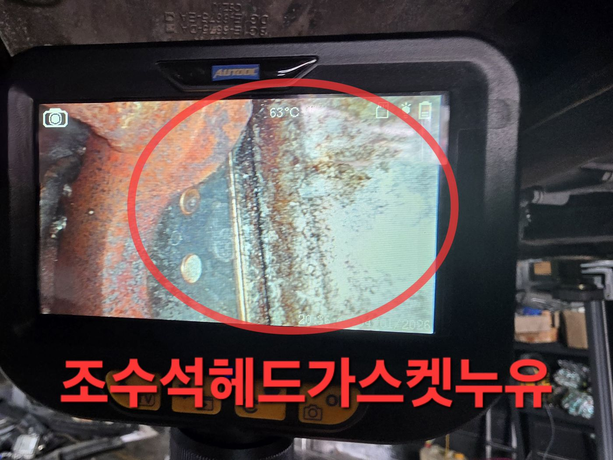
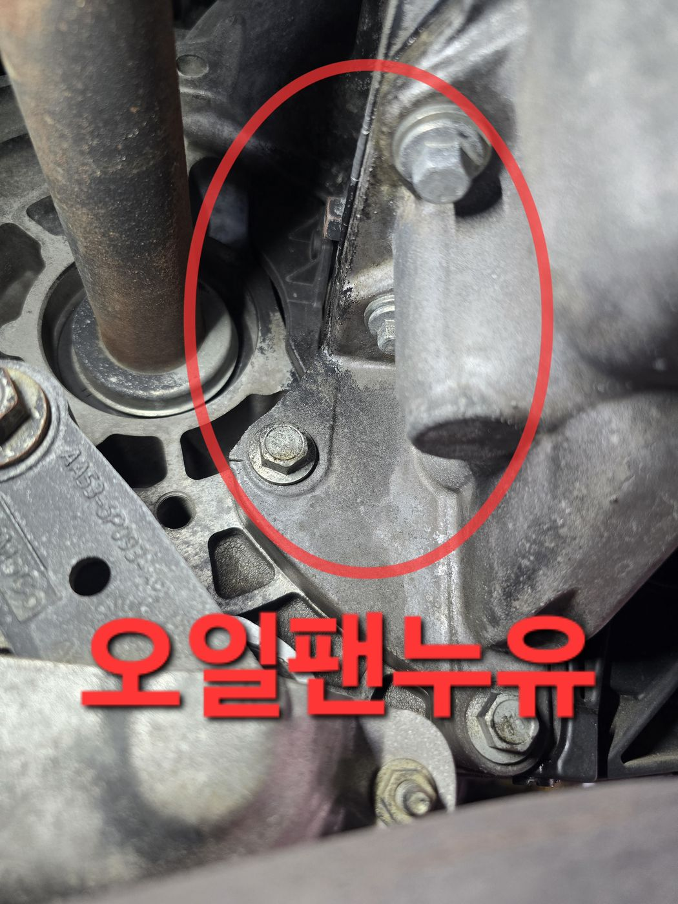
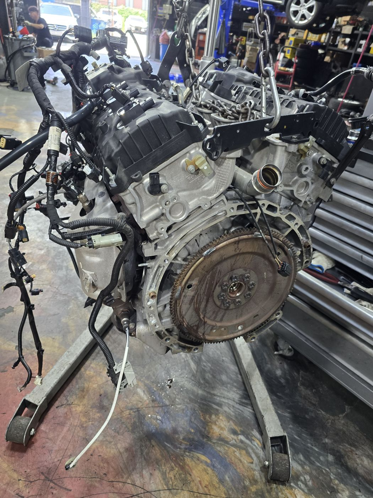
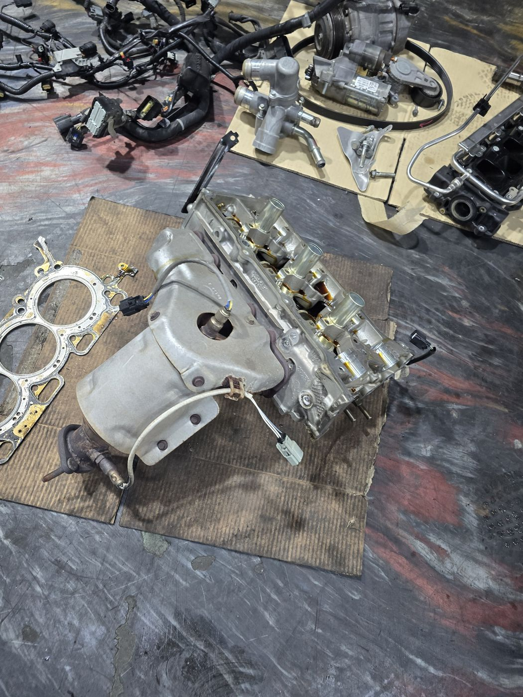
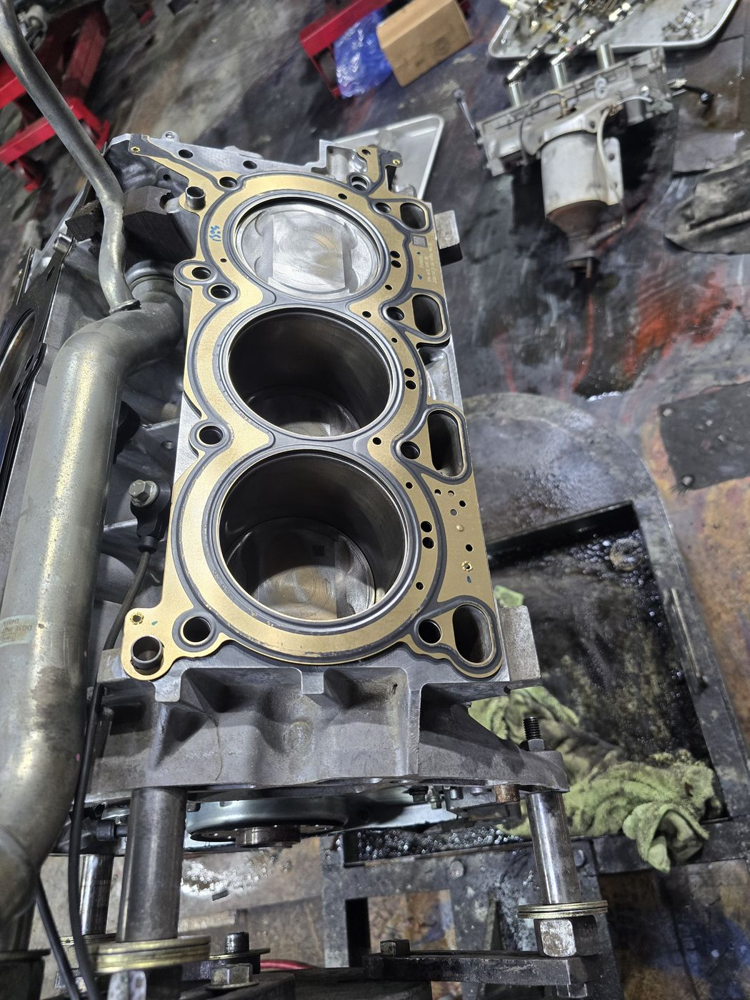
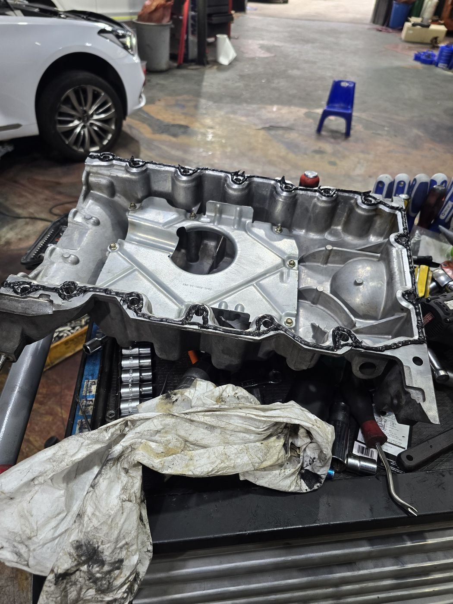
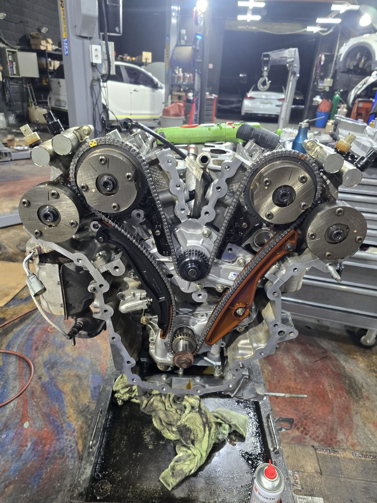

링컨
누유 진단 · 엔진 정비
정비내역서 기준
링컨 MKS — 냉각수가 줄어든다, 워터펌프가 아니라 헤드가스켓이었습니다
이런 증상에서 이어지는 작업입니다
- 냉각수 감소
- 오버히트
- 오일 누유
- 엔진오일 소모
- 백연
- 차종
- 링컨 MKS
- 주행거리
- 150,149 km
- 출고
- 2026년 9월
- 증상
냉각수가 계속 줄어든다며 입고되셨습니다. 앞서 다른 업체에서 워터펌프를 의심해 점검을 받으셨지만 증상이 잡히지 않은 상태였습니다.
- 진단
내시경으로 엔진 내부를 들여다보고 운전석 · 조수석 양쪽 뱅크에서 헤드가스켓 누유를 확인했습니다. 하부 점검에서 오일팬 누유도 함께 나왔습니다. 냉각수가 새던 자리는 워터펌프가 아니라, 앞서 다른 업체에서 보조 물통을 교환한 뒤 호스 밴드를 제대로 조이지 않은 부분이었습니다.
- 수리
엔진 탈부착, 엔진 · 미션 탈부착, 실린더헤드 탈부착, 헤드가스켓 좌 · 우 교환, 로커암 커버 가스켓 교환, 흡기 가스켓 교환, 파이프 오링 교환, 리어 크랭크 리테이너 교환, 오일팬 실링 작업, 엔진오일 · 부동액 · 에어컨 가스 교환
- 결과
2026년 9월 11일 출고. 누유 부위를 모두 잡고 냉각 계통을 정상화한 뒤 시운전으로 확인했습니다.
이런 질문으로 찾아오십니다
- 냉각수가 계속 줄어드는데 왜 그런가요
- 다른 곳에서는 워터펌프라는데 맞나요
- 인천 링컨 · 포드 정비소
- 헤드가스켓 누유 확인은 어떻게 하나요
- 주차한 자리에 기름이 떨어져 있어요
- 인천 · 부천 · 김포 · 서울 서부에서 찾아오십니다








